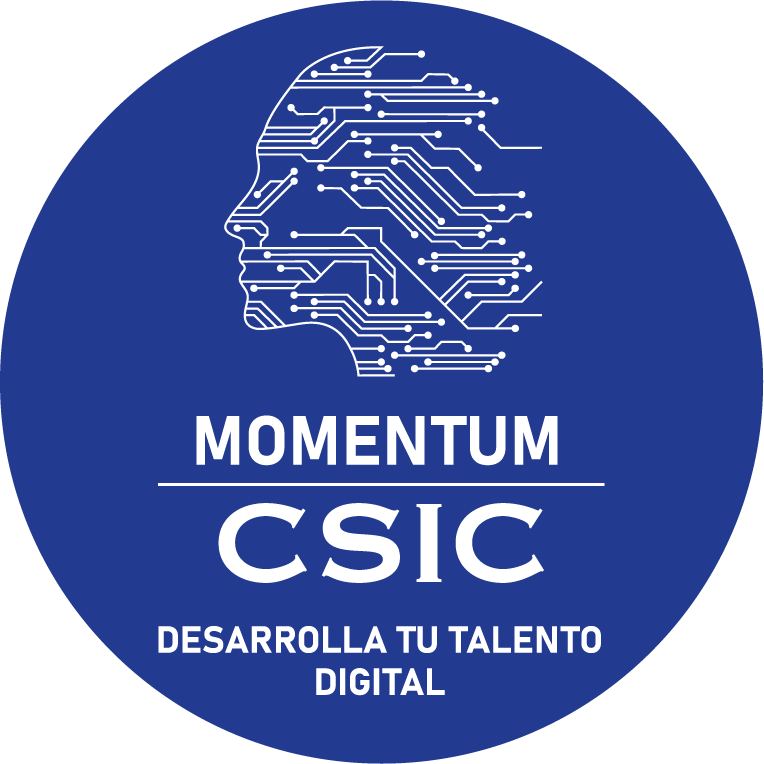

Curriculum vitae
A short version. For the full PDF, just ask.
Education
-
2024 – now
Ph.D. in Mathematics
Instituto de Ciencias Matemáticas (ICMAT-CSIC) & Universidad Autónoma de Madrid
Bayesian methods, adversarial risk analysis and multi-agent reinforcement learning.
-
2023 – 2024
M.S. in Logic, Computation and Artificial Intelligence
Universidad de Sevilla
Average grade 9.6 / 10.
-
2019 – 2023
B.S. in Mathematics
Universidad de Sevilla
Research experience
-
Dec 2024 – now
Predoctoral Researcher, Momentum CSIC Programme
Institute of Mathematical Sciences (ICMAT-CSIC), Madrid
Bayesian statistics, adversarial risk analysis, multi-agent reinforcement learning, privacy-preserving federated learning and decision-theoretic AI security.
-
Jan – Oct 2024
Research Fellow, JAE Intro ICU Fellowship
Microelectronics Institute of Seville (IMSE-CNM, CSIC)
Bio-inspired vision processing with deep learning: spiking neural network architectures with learnable synaptic delays for neuromorphic spatio-temporal classification (PyTorch).
Languages
Spanish (native) · English (C1, Cambridge Certificate in Advanced English)
Publications, talks and teaching are listed on their own pages: Publications · Talks · Teaching & more.

My position is funded by the European Commission – NextGenerationEU, through the Momentum CSIC Programme: Develop Your Digital Talent.